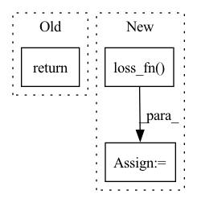

Pattern ID :16325
Before Change
IHVP_ = [g_ + (1 - damp) * ihvp_ - hvp_ / scale for (g_, ihvp_, hvp_) in zip(grads, IHVP_prev, hvps_)]
return [IHVP_[k] / (scale * NUM_SAMPLES) for k in range(len(train_idx))]
After Change
IHVP_ = [IHVP_[k] / (scale * NUM_SAMPLES) for k in range(len(train_idx))] // Rescale Hessian-Vector products
IHVP_ = torch.stack(IHVP_, dim=0) // Make a tensor of shape (len(train_idx), n_params)
test_loss = [self.model.loss_fn( X_test[idx:idx+1], self.model(X_test[idx:idx+1])) for idx in range(len(X_test))]
test_grads = [stack_torch_tensors(torch.autograd.grad(test_loss[k], self.model.parameters(), create_graph=True))
for k in range(len(X_test))]
test_grads = torch.stack(test_grads, dim=0)
logging.info(test_grads.shape)
IF = torch.zeros(0)
return IFIn pattern: SUPERPATTERN
Frequency: 4
Non-data size: 3
Instances Fragment ID: 54770115
Project Name: jonathancrabbe/label-free-xai
Commit Name: 46874c1656812543a18b052626e88766368b1463
Time: 2021-12-27
Author: jonathan.cr1302@gmail.com
File Name: explanations/examples.py
M Class Name: InfluenceFunctions
N Class Name: InfluenceFunctions
M Method Name: attribute(7)
N Method Name: attribute(7)
M Parent Class:
N Parent Class:
M File Name: explanations/examples.py
N File Name: explanations/examples.py
M Start Line: 26
M End Line: 45
N Start Line: 28
N End Line: 55
Before Change
trg_embedding = self.encoder.src_embedding
dec_output = self.decoder(enc_keys, enc_values, x_mask, y, trg_embedding)
return dec_output
def init_search(self, x):After Change
outputs = self.decoder(enc_keys, enc_values, x_mask, y, trg_embedding)
if compute_loss == True:
loss = self.loss_fn( outputs, targets)
outputs = [loss] + outputs
return outputs
Fragment ID: 54770107
Project Name: yaoxiaoyuan/mimix
Commit Name: 59b6082bb310a2a17c2ac30225e300124904cc2f
Time: 2022-06-21
Author: sbsbsbsbsb945@gmail.com
File Name: src/models.py
M Class Name: Seq2seq
N Class Name: Seq2seq
M Method Name: forward(4)
N Method Name: forward(2)
M Parent Class: nn.Module
N Parent Class: nn.Module
M File Name: src/models.py
N File Name: src/models.py
M Start Line: 663
M End Line: 675
N Start Line: 840
N End Line: 857
Before Change
// At the first timestep return the decoder NLL, otherwise return KL(q(x_{t-1}|x_t,x_0) || p(x_{t-1}|x_t))
losses = torch.where(t == 0, decoder_nll, kl)
return losses.mean()
After Change
pred_noise, _ = model_output.chunk(2, dim = 1)
simple_losses = self.loss_fn( pred_noise, noise)
return simple_losses + vb_losses.mean() * self.vb_loss_weight
Fragment ID: 54770111
Project Name: lucidrains/denoising-diffusion-pytorch
Commit Name: 62e84903854715c4dac54c49a6f61ff47c9e4c47
Time: 2022-05-12
Author: lucidrains@gmail.com
File Name: denoising_diffusion_pytorch/learned_gaussian_diffusion.py
M Class Name: LearnedGaussianDiffusion
N Class Name: LearnedGaussianDiffusion
M Method Name: p_losses(5)
N Method Name: p_losses(5)
M Parent Class: GaussianDiffusion
N Parent Class: GaussianDiffusion
M File Name: denoising_diffusion_pytorch/learned_gaussian_diffusion.py
N File Name: denoising_diffusion_pytorch/learned_gaussian_diffusion.py
M Start Line: 105
M End Line: 113
N Start Line: 115
N End Line: 145
Before Change
x = dict2tensor(x, device=self.device)
self.net.train()
return self._learn_one(x)
def _learn_one(self, x):
x_pred = self.net(x)After Change
self.net.train()
x_pred = self.net(x)
loss = self.loss_fn( x_pred, x)
self._apply_loss(loss)
return self
def _apply_loss(self, loss): Fragment ID: 54770109
Project Name: online-ml/river-torch
Commit Name: 27a2d4f404ea02dffc23bec1c6ca48c9cd3352e9
Time: 2022-08-10
Author: cazzonelli@fzi.de
File Name: river_torch/anomaly/probability_weighted_ae.py
M Class Name: ProbabilityWeightedAutoencoder
N Class Name: ProbabilityWeightedAutoencoder
M Method Name: learn_one(2)
N Method Name: learn_one(2)
M Parent Class: ae.Autoencoder
N Parent Class: base.Autoencoder
M File Name: river_torch/anomaly/probability_weighted_ae.py
N File Name: river_torch/anomaly/probability_weighted_ae.py
M Start Line: 112
M End Line: 115
N Start Line: 114
N End Line: 120